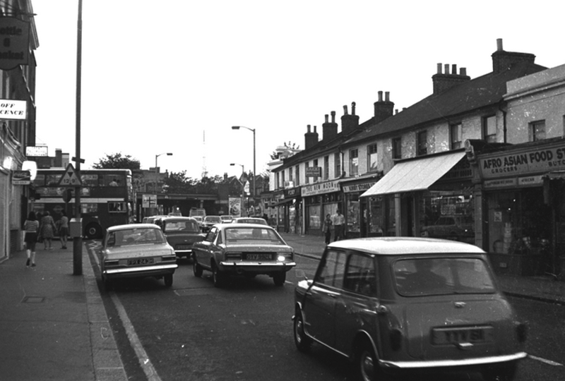
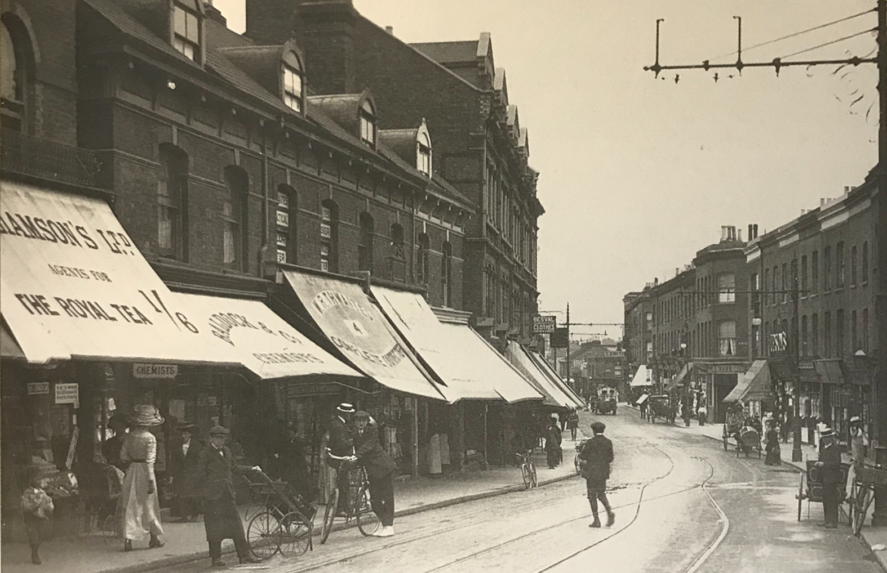
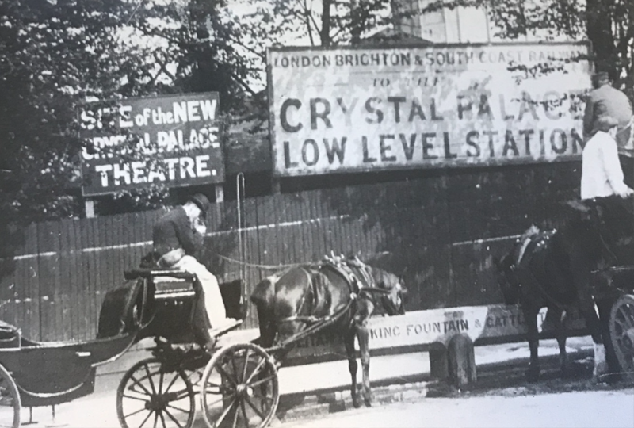

<figure class="figure">

<figcaption class="figcaption">EMILE ZOLA photographer IN NORWOOD SOUTH LONDON 1898 - 1899</figcaption>
</figure>

<figure class="figure">

<figcaption class="figcaption">South Norwood High Street - 1956, Talking of Croydon No.3, South Norwood</figcaption>
</figure>

<figure class="figure">

<figcaption class="figcaption"></figcaption>
</figure>
